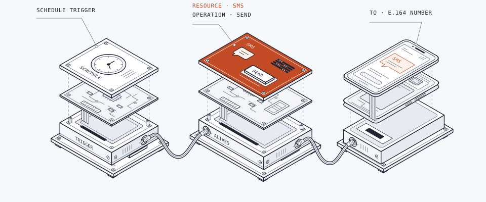

Home/Connectors/n8n
Build with n8n
Send SMS from your workflows with the Alive5 node.
Verified community nodeView Alive5 on n8n ↗

The integration is maintained by Alive5 and verified by n8n. Use the SMS Send action to add business texting to a workflow.
Connect your account
- Install Alive5
As an n8n instance owner or admin, open the canvas and select +. Search for Alive5 under More from the community, select it, then choose Install.
- Add your credentials
Add the Alive5 node and create an Alive5 API credential. Paste your API key and keep the default API Base URL. Store the key in the credential, not in a workflow field.
- Choose the action
Set Resource to SMS and Operation to Send. Select your channel and a user assigned to that channel.
If Alive5 does not appear, ask your instance owner to enable verified community nodes. See n8n's installation guide ↗.
Send an SMS
Fill these fields in the Alive5 node. You can also map values from an earlier step using n8n expressions.
| Field | Value |
|---|---|
| Channel name or ID | The channel for your SMS business line. |
| User email or ID | A user assigned to the selected channel. |
| To phone number | Your recipient's number with country code. |
| Message | The text to send. |
Try a first workflow
Example configuration. Run it in your n8n workspace.
- Connect a Manual Trigger to the Alive5 node.
- Enter a phone number you control and a short message, such as Hello from Alive5.
- Execute the workflow. This sends a real SMS.
- Check the node output and confirm that the text arrives on your phone.
Build on your workflow
Replace the manual step with a schedule or a trigger from another app. Map its recipient and message values into Alive5.
Send only to recipients who have agreed to receive texts from your business. Check the recipient and message mappings. Keep automatic retries off until you have a way to prevent duplicate messages.